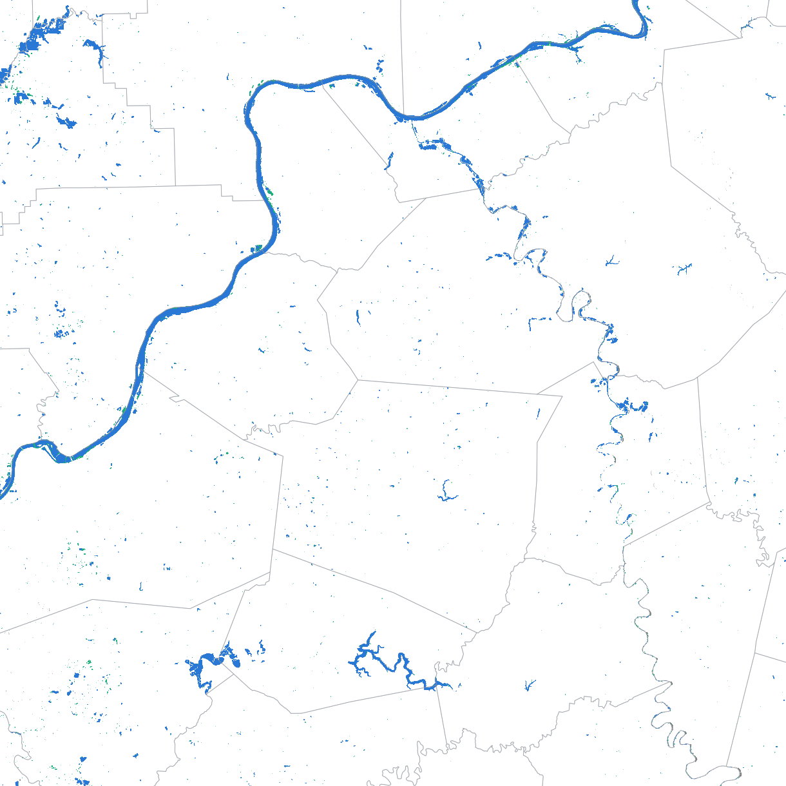
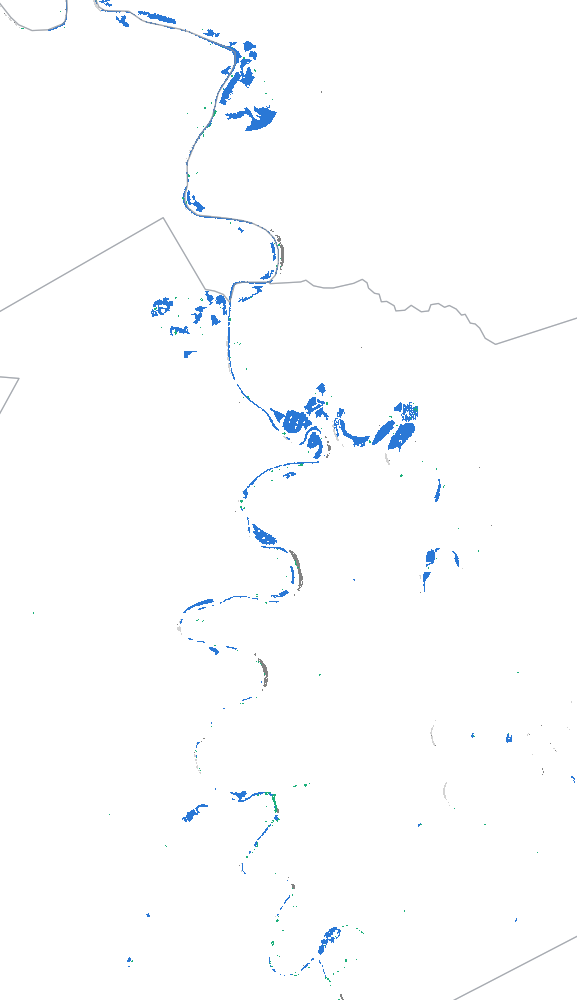
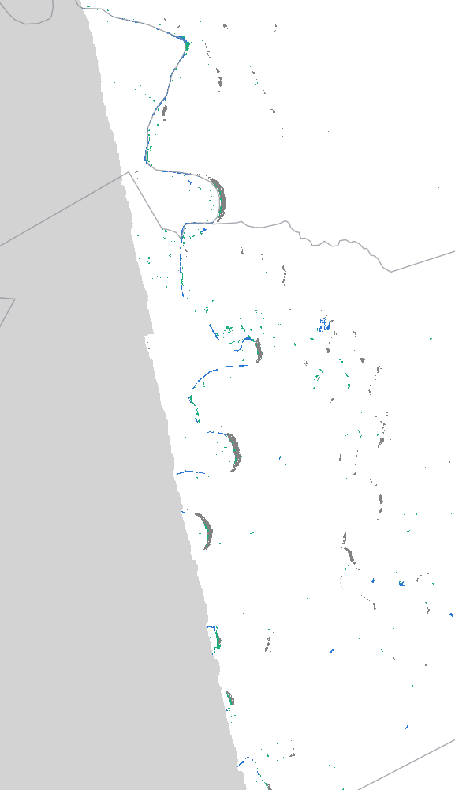
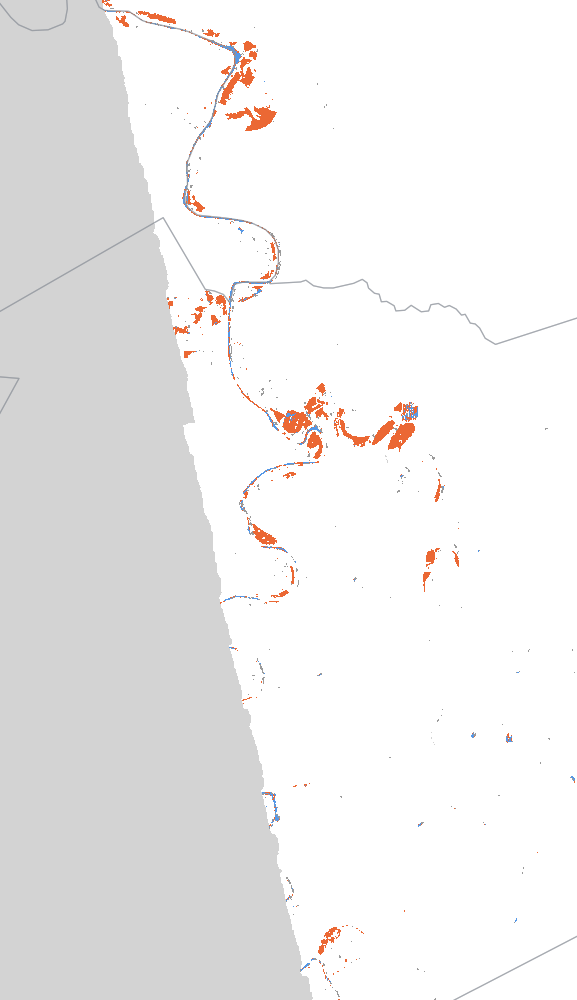

Discussion briefing · Warren County planning and floodplain management · October 2026
Flood and climate intelligence for Warren County
What radar satellites can show after a flood, what a future climate assessment could tell planners, and ten project ideas for Bowling Green and Warren County.
Western Kentucky University · DSOC AI Research LabPrototype for discussion. Not a forecast.
Wednesday, 2:00–3:00 pm
Today’s agenda
A short tour of what satellite data and climate projections can show for Warren County, followed by a conversation about your priorities.
2:00 · 5 min
Introductions and goals
Who we are, what we have been building, and what we hope to learn from your office today.
2:05 · 10 min
What satellites caught in 2025
The April 2025 crest at Frankfort: radar saw it just before the peak, then missed the next seven days.
2:15 · 10 min
Floodplain management uses
Substantial-damage reviews, flooding in sinkholes outside mapped floodplains, NFIP and the Community Rating System.
2:25 · 10 min
Future climate for Warren County
What an assessment would answer: heavy rainfall for stormwater design, heat, drought, and growth areas.
2:35 · 10 min
Ideas for Warren County
Ten project ideas, from neighborhood heat maps to a 3D model of the Barren River corridor.
2:45 · 15 min
Your priorities and next steps
Discussion questions, then agree on one concrete first step.
Kentucky River at Lock 4, Frankfort · USGS 03287500
What satellites caught in April 2025
We replayed the April 2025 flood with NASA’s OPERA radar water maps. Radar sees through clouds and at night, but a single satellite passes over only every several days.
48.35ft
Crest at Lock 4 on Apr 7, the second-highest stage on record
9.3h
The radar looked just before the crest (Apr 6, 7:40 pm EDT)
7days
Until the next look, which covered only 24% of the area
+1.4h
The near-crest map was produced after the crest had passed
Stage at Lock 4, April 3–16, 2025
StageRadar lookMinorModerateMajor flooding
USGS gage height, 3-hourly, Eastern Daylight Time. NWS flood categories: minor 31 ft, moderate 35 ft, major 40 ft. Hover or use the arrow keys to read values.

Apr 6, 7:40 pm EDT · whole radar tile (110 × 110 km). The dashed line is the western edge of the Apr 13 look; everything west of it was not imaged a week later. The box marks the zoomed reach.
Apr 647.97 ft

Apr 1311.36 ft

ChangeApr 6 → 13

Open waterInundated vegetationFlood water (Apr 6 only)Water on both datesWater Apr 13 onlyNot imagedLock 4 gauge
Water in the Frankfort–Monterey reach (17 × 30 km), pixels imaged on both dates
Flood water seen only on Apr 6: 5.6 km². On Apr 13, 36% of this reach was not imaged at all.
One satellite caught this crest by luck and missed the recession. Combining every available satellite with gauges and models fills the gaps, and the same approach applies to the Barren River and Warren County.
Floodplain management
Where better flood maps could help
Starting points to test with your staff, not conclusions.
After a flood
Substantial-damage reviews
Which structures were likely inundated, roughly how deep and for how long, so field reviews can start with the most likely cases.
Karst
Flooding outside mapped floodplains
Water ponding in sinkholes and closed depressions that the flood maps do not show. Satellite looks plus resident reports can document where it happens and how often.
NFIP
Community Rating System
A consistent record of each flood’s extent and duration could support flood-data upkeep, outreach and floodplain management planning.
Mapping
Where maps may need a second look
Repeated flooding observed outside the mapped floodplain is evidence for prioritizing study areas in future map updates.
What a post-flood map package could include
Where
Flood extent on a 30 m grid, including water under trees where newer radar allows.
How deep
Estimated depth from the water edge and lidar elevation, checked against high-water marks.
How long
Duration and recession by area, for inspections and damage reviews.
How sure
Confidence and the age of the latest satellite look on every pixel, delivered as GIS layers.
Planning horizon: 2040s to 2070s
A future climate assessment for Warren County
Downscaled climate models translated into numbers planners can use.
Rainfall
Heavier storms
How design-storm rainfall could change, for stormwater standards and detention sizing.
Heat
Hot days and nights
Days above 95°F and warm nights, for public health, parks and outdoor work.
Water
Drought and low flow
Dry spells and their effect on water supply and the Barren River.
Growth
Where to build
Combining climate risk with growth areas in the comprehensive plan.
Step 1
Observed record
Long-term station records for Bowling Green: what has already changed.
Step 2
Downscaled projections
Many climate models, downscaled to local scale, for several emissions scenarios.
Step 3
Planning metrics
Design rainfall, heat days, drought indices, chosen with your staff.
Step 4
Briefing and maps
A short report, GIS layers and a dashboard like this one.
Projects we could explore together
Ideas for Warren County
Ten ideas grouped by theme. Each lists the kinds of offices it would help most.
For the conversation
Questions and next steps
After the last flood, how did your office decide which structures needed a substantial-damage review? What took the longest?
Where do you see flooding outside mapped floodplains, such as sinkholes and depressions? How are those reports recorded?
What would make a post-flood map useful: extent, depth, duration, a list of structures?
Which Community Rating System activities or map-update priorities could better flood data support?
Which climate questions come up in planning decisions: stormwater design rainfall, growth areas, heat?
Which past flood in Warren County should we replay first?
Possible first steps
Pick one past Warren County flood to replay with satellite data.
Share flood reports, high-water marks or sinkhole-flooding locations that can check the maps.
Scope a short future-climate briefing for Warren County.